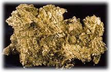

Om Guld
Guld är ett grundämne, det vill säga, det består enbart av guld och det är således inte en blandning av andra ämnen. Guld är en ädel metall, den oxiderar därför inte i luft som järn, (det rostar) eller koppar, gör (den ärgar).
Äkta Guld
Det man i dagligt tal kallar för äkta guld är en legering bestående av minst 14K (58,5 %, 585 tusendelar) guld. Det ska vara lika mycket guld rakt igenom – inte bara på ytan. Man kan inte se på ett föremål hur mycket guld det innehåller och inte heller känna det på vikten; färg och lyster kan uppnås genom polering och/eller ytbeläggning. 18K är välbekant för de flesta, eftersom det är den helt dominerande finhalten i Sverige. 18K innehåller 75 % (750 tusendelar) guld och 25 % andra metaller. Från första juli 1988 är lägsta finhalt för ”äkta guld” 14K, tidigare var det 18K.